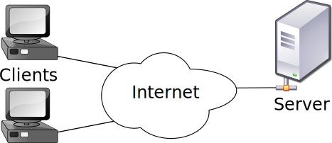

Conceptos
- Internet: red global de computadoras.
- Protocolos: idiomas para comunicar equipos a través de la red.
- IP: sistema numérico de identificación de equipos.
- Dominio: IP es complejo para los humanos. Solución: dominios.
- HTTP: protocolo para servir páginas web.
- URL: identificador de recursos. i.e. http://www.google.es
- Navegador: software para cargar y visualizar páginas web.
Proceso de carga de una web
- Introducimos una URL en el navegador, por ejemplo http://example.com
- El navegador solicita la página al equipo en example.com
- El equipo en example.com recibe la petición
- Éste envía la página web (HTML y sus recursos) al navegador
- Finalmente, el navegador dibuja la página que solicitó.
Modelo cliente-servidor
Servidor: espera peticiones y envía respuestas
Cliente: envía peticiones y espera respuestas

Antítesis: Modelo p2p (peer to peer).
Proceso de carga de una web (II)
- En el equipo cliente introducimos una URL en el navegador, por ejemplo http://example.com
- El navegador solicita la página al servidor example.com
- El servidor en example.com recibe la petición
- Éste envía la página web al cliente (navegador)
- Finalmente, el navegador renderiza la página solicitada.
HTTP
- Significa Hypertext Transfer Protocol: Protocolo de Transferencia de Hipertexto
- Pensado para arquitecturas cliente-servidor
- Es el protocolo con el que se comunican los navegadores (clientes) con los servidores web
- Sin estado. Cada petición es independiente de las anteriores.
HTTP
Algunos métodos de petición
-
GET: Pedir un recurso
GET /index.html HTTP/1.1
-
POST: Enviar datos a un recurso
-
HEAD: Solicita información sobre un recurso.
HTTP
Respuestas
Contienen diferentes campos:
- Código de respuesta
- Metadatos: información como el tamaño o la fecha
- Contenido: corresponde al recurso solicitado en sí
Códigos de respuesta:
- 2XX - Éxito. Por ejemplo, 200
- 3XX - Recurso redirigido
- 4XX - Error en el cliente. P.ej. 404, recurso no encontrado
- 5XX - Error en el servidor.
Proceso de carga de una web (III)
- En el equipo cliente introducimos una URL en el navegador, por ejemplo http://example.com
-
El navegador solicita la página al servidor example.com
GET / HTTP/1.1
Host: example.com
- El servidor en example.com recibe la petición GET
-
Éste envía la respuesta (web) al cliente (navegador)
HTTP/1.1 200 OK
Date: Thu, 23 Jan 2014 23:59:59 GMT
Content-Type: text/html
Content-Length: 1221
<html>
...
</html>
- Finalmente, el navegador renderiza la página solicitada.
En resumen
Hemos aprendido:
- Conceptos fundamentales: qué es Internet, un dominio, un protocolo, etc.
- Arquitectura cliente-servidor.
- Protocolo HTTP
- Proceso de carga de una página web
¡Ya estamos listos para hablar de programación!